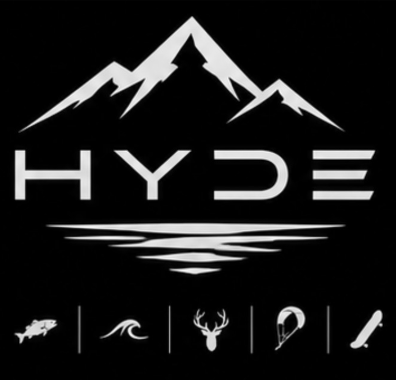

A Looseboard brand
Share the story. Keep the spot. Your photo is rebuilt on this device with no location tags and no background. Nothing is uploaded.
Example photo
Loading the cutout engine…
What the photo carries
Background
The background is replaced, not blurred. A blurred ridgeline or pier can still be recognised.
Touch up
Save
Look for these before you post
The app can't spot these for you. If one is in the picture, paint over it with Hide.
- Boat name or registration number. Anyone can look up the boat and its home port.
- Fishfinder or chartplotter screen. It can show your exact position, depth and waypoints.
- Sunglasses. The lenses can mirror the shoreline you just removed.
- Timing. Posting while you're still out tells people the bite is on right now, and where your truck is parked.